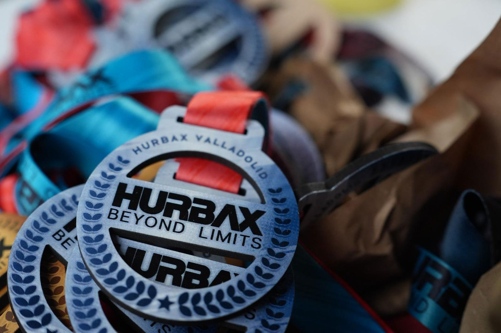

Santander's Plaza Alfonso XIII traded its usual quiet for the sound of rowing ergs and sandbags on March 14, as Hurbax — Spain's growing "Beyond Limits" hybrid-fitness circuit — made its debut stop in the Cantabrian capital.
The format is unforgiving by design: five kilometres of running broken into five one-kilometre segments, each one leading straight into a high-intensity workout station. Athletes rotated through rowing (1,000m solo and pairs, 2,000m for teams), wall balls, sandbag lunges, farmer's carries and burpee broad jumps, with judges enforcing strict technical standards at every station and time penalties for any shortcuts.
Around 500 athletes took to the course across the day's three waves — pairs from 3:00pm, teams from 4:40pm and individual competitors closing out the afternoon from 5:40pm — with the plaza's public zones, free to spectators, giving Santander a first-hand look at a competition format still new to the city.

Image Media covered the event start to finish, with Luis Moreira, Willi Becker, Sergio Mendes and Kika on the ground documenting all three categories. Santander is the second stop on Hurbax's 2026 national calendar, which continues on to Valladolid, Pontevedra, Oviedo, Gijón and a season-closing final in Madrid.